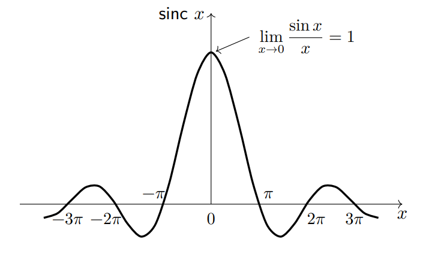

Fourier series (푸리에 급수)
Divide and Conquer을 직역하면 쪼개서 정복하다라는 뜻으로 공학에서 이는 복잡한 문제를 잘게 쪼개서 해를 구하는 과정을 의미한다. Fourier Series 또한 이에 속한다.
Fourier Series를 간단하게 말하면 복잡한 주기함수를 단순한 신호들의 합으로 표현하는 것이다.
Fourier Series의 다양한 형태
Fourier Series는 다양한 형태로 복잡한 주기 함수를 표현는 방법을 의미한다. 우선 Fourier Series의 다양한 형태를 먼저 소개하도록 하겠다.
주로 복소지수형태와 삼각함수형태를 사용함
아래 식에서 계속 등장하는 \(\int_{T_0}\)는 적분 구간의 길이가 \(T_0\)임을 의미한다.
complex exponential form
\[x(t) = \displaystyle\sum^{\infty}_{k=-\infty}C_ke^{jk\omega_0t}, C_k = C_{-k}^*\]
\[C_k = \frac{1}{T_0}\int_{T_0}x(t)e^{-jk\omega_0t}dt\]
combined trigonometric form
\[x(t) = C_0 + \displaystyle\sum^{\infty}_{k=1}2|C_k|cos(k\omega_0t + \theta_k)\]
\[C_k = \frac{1}{T_0}\int_{T_0}x(t)e^{-jk\omega_0t}dt\]
trigonometric form
\[x(t) = a_0 + \displaystyle\sum_{k=1}^{\infty}(a_kcos(k\omega_0t)+b_ksin(k\omega_0t))\]
\[a_k = \frac{2}{T_0} \int_{T_0}x(t)cos(k\omega_0t)dt,\quad b_k = \frac{2}{T_0} \int_{T_0}x(t)sin(k\omega_0t)dt,\quad a_0 = \frac{1}{T_0}\int_{T_0}x(t)dt\]
Fourier Coefficient (\(C_k\); 푸리에 계수)
- \(C_0\)는 신호 \(x(t)\)의 DC 값 또는 평균 값이다. \(\because C_0 = \displaystyle\frac{1}{T_0}\int_{0}^{T_0}x(t)dt\)
- \(f(t)\)와 \(g(t)\)가 구간 a, b에서 orthogonal(직교)하면 \(\displaystyle\int_{a}^{b}f(t)g(t)= 0\)이다.
- The harmonics in the Fourier series(예를 들어, \(\displaystyle\sum^{\infty}_{k=-\infty}C_ke^{jk\omega_0t}\))는 구간 0, \(T_0\)에서 orthogonal하다. \(\displaystyle \because \int_{0}^{T_0}e^{jk\omega_0t}e^{-jk\omega_0t}= 0\)
\(a(t), b(t)\)라는 신호의 내적은 다음과 같이 표현할 수 있다. \(<a(t),b(t)> \displaystyle = \int_{T_0}a(t)b^*(t)\)
두 신호가 orthogonal한 신호라면 \(\displaystyle \int_{T_0}a(t)b^*(t) =0\)이 된다.
\(if\).. \(<e^{jk\omega_0 t}, e^{jr\omega_0 t}> = \displaystyle \int_{T_0}e^{j(k-r)\omega_0 t} = \cdots = 0(for \;\; k \neq r), T_0(for \;\; k = r)\) 이다. 이를 통해 \(e^{jk\omega_0 t}\)라는 신호는 basis 신호라고 볼 수 있고, \(x(t) = \displaystyle\sum^{\infty}_{k=-\infty}C_ke^{jk\omega_0t}\)를 통해 무한대의 차원을 표현할 수 있다는 것을 알 수 있다.
frequency spectra (주파수 스펙트럼)
푸리에 계수에서 주목해야 하는 부분은 주파수 스펙트럼이다. rectangular pulse의 푸리에 계수를 구하는 예시를 통해 주파수 스펙트럼에 대해 소개하도록 하겠다.위의 신호는 rectangular pulse로 Fourier coefficients는 아래와 같다.
\[C_k = \frac{1}{T_0}\int_{-\frac{T_0}{2}}^{\frac{T_0}{2}}x(t)e^{-jk\omega_0t}dt = \frac{1}{T_0}\int_{-\frac{T}{2}}^{\frac{T}{2}}X_0 e^{-jk\omega_0t}dt = \frac{X_0}{T_0(-jk\omega_0)}e^{-jk\omega_0t}|^{\frac{T}{2}}_{-\frac{T}{2}}\]
\[ = \frac{2X_0}{kT_0\omega_0}[\frac{e^{jk\omega_0T/2} +e^{-jk\omega_0T/2}}{2j}] = \frac{2X_0}{kT_0\omega_0} sin(k\omega_0T/2) = \frac{TX_0}{T_0} \frac{sin(k\omega_0T/2)}{k\omega_0T/2}\]
\[= \frac{TX_0}{T_0}sinc(\frac{k\omega_0T}{2})\]
여기서 sinc function에 대해서 간단히 소개하면 \(\displaystyle sinc(x) = \frac{sin(x)}{x}\)와 같이 정의할 수 있고 아래와 같은 그래프 모양을 갖는다.\(C_k\)를 사용해 주파수 스펙트럼을 그리면 아래와 같다.

위 그래프를 간단하게 해석하면 rectangular pulse의 푸리에 계수에는 저주파 성분들의 가중치(\(|C_k|\))가 크고 고주파로 갈수록 해당 성분들의 가중치는 0에 가까운 것을 알 수 있다.
주파수 스펙트럼을 살펴보면 필터와 비슷한 역할을 하고 있음을 알 수 있음
위의 예시를 통해 알수 있듯 사각파(rectangular pulse)의 푸리에 계수는 sinc function을 포함하고 있음을 알 수 있음